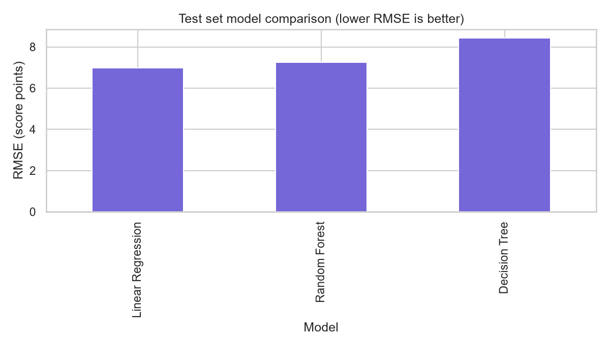
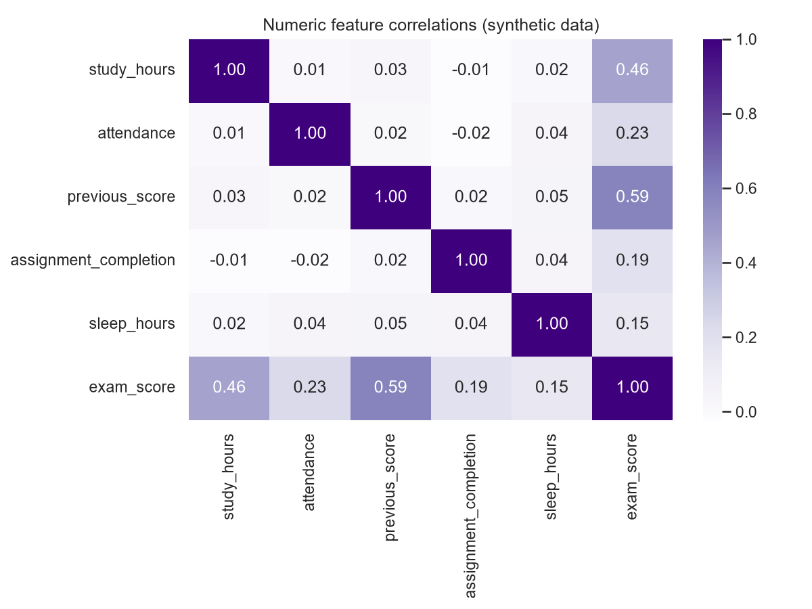
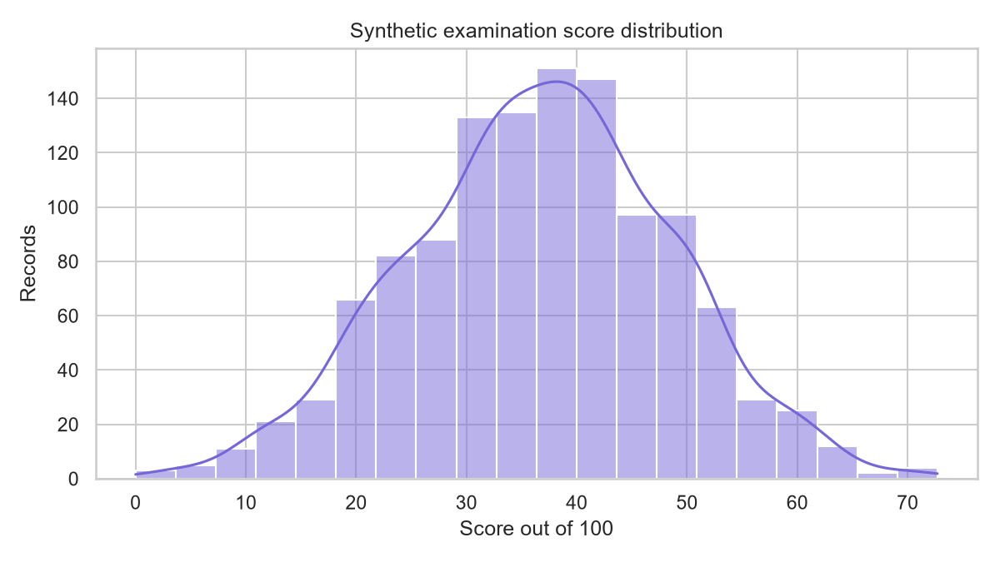

A MACHINE LEARNING MINI-PROJECT
See how your
study habits add up.
Explore a simple model that estimates an exam score from learning habits. Understand what goes into the estimate—and where small improvements may help.
Educational demo · synthetic data · estimates only
YOUR LEARNING SNAPSHOT
✦ Personalized study suggestions82
Good progressA model estimate, not a promiseYOUR LEARNING SNAPSHOT
A little context.
A clearer picture.
Enter a few study details to see an estimated score and suggestions.
MODEL EXPLORER
Behind the estimate.
These are the models' actual held-out test results for the generated synthetic dataset.
Test RMSE (lower is better)

| Model | MAE ↓ | MSE ↓ | RMSE ↓ | R² ↑ |
|---|---|---|---|---|
| Linear Regression · selected | 5.645 | 48.878 | 6.991 | 0.6230 |
| Decision Tree | 6.823 | 71.126 | 8.434 | 0.4514 |
| Random Forest | 5.885 | 52.576 | 7.251 | 0.5944 |
Numeric feature relationships

Correlation in synthetic data does not show cause.
Generated score spread

ABOUT THE PROJECT
Machine learning,
made approachable.
What this project demonstrates
It generates a clearly labeled synthetic dataset, inspects and cleans it, preprocesses features inside scikit-learn pipelines, and compares Linear Regression, Decision Tree and Random Forest using MAE, MSE, RMSE and R². The local Flask app serves the saved model.
This GitHub Pages version runs a browser-based estimate from the selected model's learned linear coefficients. The full Flask API remains available when running the project locally.
Workflow
- Generate and inspect synthetic data
- Preprocess features without test leakage
- Compare regressors on a fixed test split
- Display estimates and measured metrics